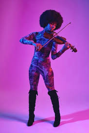
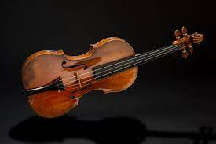
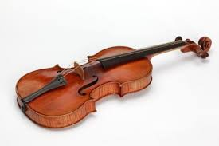
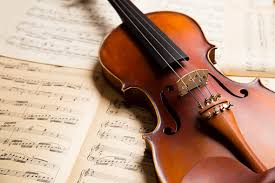
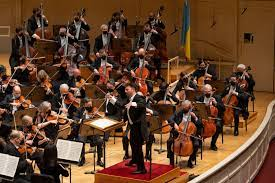
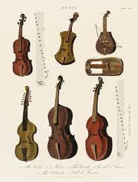
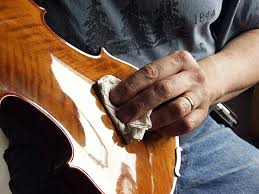
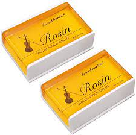
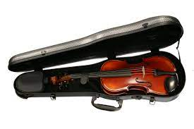

One of the reasons why I love the violin is because it was one of my first talents. I picked one up as a young girl and have been in love ever since. I'm in love with the way the rosin sharpens the bow. I love the sounds of huge orchestras as you can see one above. I also love the improvements made to violins over the years. I hope this website taught you a little more about violins!